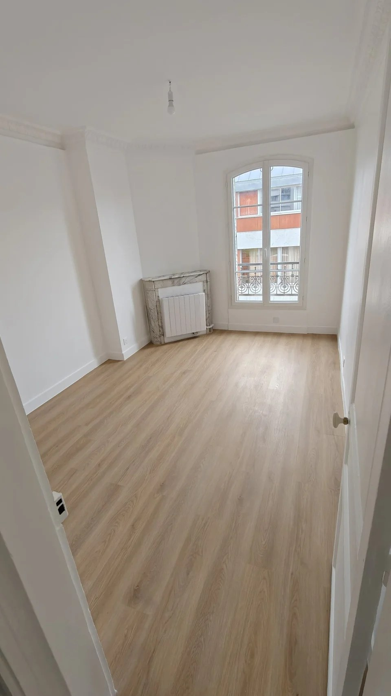

PARIS & ÎLE-DE-FRANCE · EGAR SARL
Isolation des murs par l’intérieur à Paris
Améliorer le confort avec une solution adaptée aux parois
L’isolation des murs par l’intérieur à Paris se prépare en tenant compte du bâti, de l’humidité et de la ventilation. EGAR étudie les possibilités de doublage dans le cadre d’un projet de rénovation afin de concilier confort thermique, aménagement et qualité des finitions.
Les travaux réalisés
- Examen de la configuration des murs et des contraintes d’humidité.
- Choix de la solution d’isolation et de l’épaisseur selon le projet.
- Réalisation du doublage et traitement des jonctions et points singuliers.
- Adaptation des finitions et coordination avec les prises, réseaux et menuiseries.
Gagner en confort sans négliger la ventilation
Une isolation adaptée peut réduire la sensation de paroi froide et les déperditions à travers les murs traités. Son effet dépend du logement et de l’ensemble de ses équipements. Le projet doit anticiper la perte de surface intérieure, le déplacement des équipements et le maintien d’une ventilation appropriée. Aucun gain chiffré n’est annoncé sans étude.

Exemples de travaux d’isolation par l’intérieur
- Doublage isolant de murs donnant sur l’extérieur, après examen de leur état.
- Traitement des retours de fenêtres et des jonctions avec les plafonds et planchers lorsque la configuration le permet.
- Adaptation des prises, radiateurs et autres équipements concernés par l’épaisseur du doublage.
- Préparation des surfaces pour recevoir les finitions prévues au projet.
Les étapes d’un projet d’isolation des murs
- Diagnostic du support : examen des murs, de l’humidité éventuelle et des points singuliers.
- Étude de la solution : choix du système, de l’épaisseur et des performances visées selon le bâtiment.
- Préparation : organisation des déplacements d’équipements et vérification des conditions de ventilation.
- Pose : réalisation du doublage et traitement des raccords conformément au système retenu.
- Finitions : préparation des parements avant peinture ou revêtement.
Questions fréquentes sur l’isolation intérieure
Combien de surface perd-on avec un doublage isolant ?
La perte dépend de l’épaisseur totale du système et du nombre de murs traités. Elle est estimée à partir des dimensions et de la solution retenue.
Peut-on isoler un mur qui présente des traces d’humidité ?
Il faut d’abord identifier l’origine de l’humidité et traiter le problème. La pose d’un doublage sur un support humide sans diagnostic peut entraîner des désordres.
EGAR est-elle certifiée RGE pour tous ses travaux ?
Non. La qualification RGE d’EGAR concerne l’isolation thermique des murs par l’intérieur, dans le périmètre précis de sa qualification. Elle ne s’applique pas automatiquement aux autres prestations.
Préparer votre demande de devis
Précisez les murs concernés, la surface approximative, les signes éventuels d’humidité et le système de ventilation existant. Une visite permet d’examiner les supports et de définir une proposition adaptée à votre logement.
Parlons de vos travaux
EGAR SARL · Plus de 30 ans d’expérience · 17 avenue Gambetta, 75020 Paris.
Intervention à Paris et en Île-de-France · egar@outlook.fr